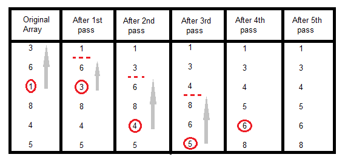

Selection sorting is conceptually the most simplest sorting algorithm. This algorithm first finds the smallest element in the array and exchanges it with the element in the first position, then find the second smallest element and exchange it with the element in the second position, and continues in this way until the entire array is sorted.

In the first pass, the smallest element found is 1, so it is placed at the first position, then leaving first element, smallest element is searched from the rest of the elements, 3 is the smallest, so it is then placed at the second position. Then we leave 1 nad 3, from the rest of the elements, we search for the smallest and put it at third position and keep doing this, until array is sorted.
void selectionSort(int a[], int size)
{
int i, j, min, temp;
for(i=0; i < size-1; i++ )
{
min = i; //setting min as i
for(j=i+1; j < size; j++)
{
if(a[j] < a[min]) //if element at j is less than element at min position
{
min = j; //then set min as j
}
}
temp = a[i];
a[i] = a[min];
a[min] = temp;
}
}
Worst Case Time Complexity : O(n2) Best Case Time Complexity : O(n2) Average Time Complexity : O(n2) Space Complexity : O(1)